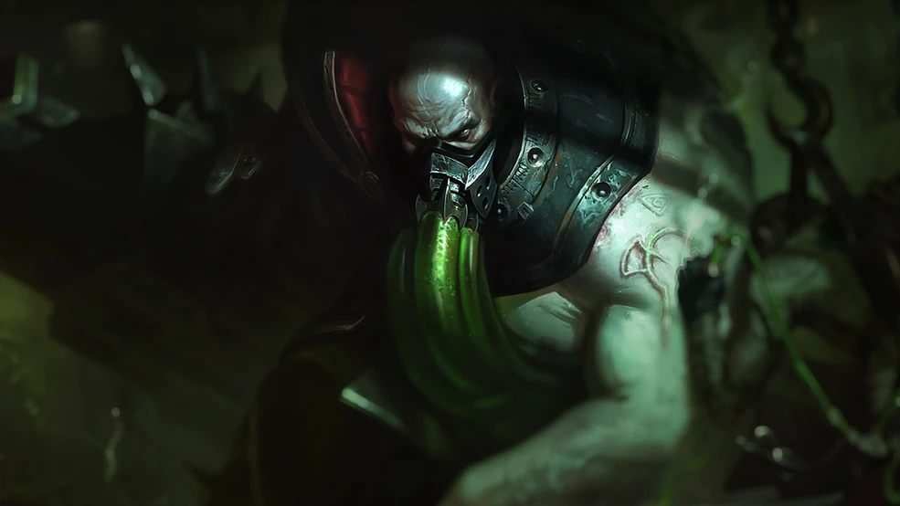

Champion Name: Urgot
Urgot is a juggernaut champion in League of Legends, known for his tankiness and damage output. He excels in the top lane and can also be played in the jungle.
Abilities:
- Passive: Echoing Flames - Urgot's basic attacks deal additional damage based on his maximum health.
- Q: Corrosive Charge - Urgot fires a charge that slows and damages enemies.
- W: Purge - Urgot fires a barrage of cannons, dealing damage to enemies in front of him.
- E: Disdain - Urgot flips enemies behind him, knocking them back.
- R: Fear Beyond Death - Urgot fires a harpoon that roots and damages enemies, pulling them towards him if they are hit.
Role: Top Lane / Jungle
Playstyle: Urgot is a tanky champion who excels in team fights and can deal significant damage while soaking up damage for his team. He is best played in the top lane or jungle, where he can farm and scale into the late game.
Champion Name: Kled

Kled is a yordle champion in League of Legends, known for his aggressive playstyle and ability to engage fights. He excels in the top lane and can also be played in the jungle.
Abilities:
- Passive: Skaarl, the Cowardly Lizard - Kled's mount, Skaarl, provides him with additional health and movement speed.
- Q: Bear Trap on a Rope - Kled throws a bear trap that roots and damages enemies.
- W: Violent Tendencies - Kled gains bonus attack speed and damage for a short duration.
- E: Jousting - Kled charges forward, dealing damage to enemies in his path.
- R: Chaaaaaaaarge!!! - Kled charges forward, dealing damage to enemies and knocking them back.
Role: Top Lane / Jungle
Playstyle: Kled is an aggressive champion who excels in team fights and can engage fights with his ultimate. He is best played in the top lane or jungle, where he can farm and scale into the late game.
Champion Name: Yorick

Yorick is a juggernaut champion in League of Legends, known for his ability to summon ghouls and deal significant damage. He excels in the top lane and can also be played in the jungle.
Abilities:
- Passive: Shepherd of Souls - Yorick summons ghouls that attack enemies and provide additional damage.
- Q: Last Rites - Yorick deals damage to enemies and heals himself.
- W: Dark Procession - Yorick creates a wall of ghouls that blocks enemies.
- E: Mourning Mist - Yorick throws a mist that slows and damages enemies.
- R: Eulogy of the Isles - Yorick summons a powerful ghoul that fights alongside him.
Role: Top Lane / Jungle
Playstyle: Yorick is a tanky champion who excels in team fights and can deal significant damage while soaking up damage for his team. He is best played in the top lane or jungle, where he can farm and scale into the late game.